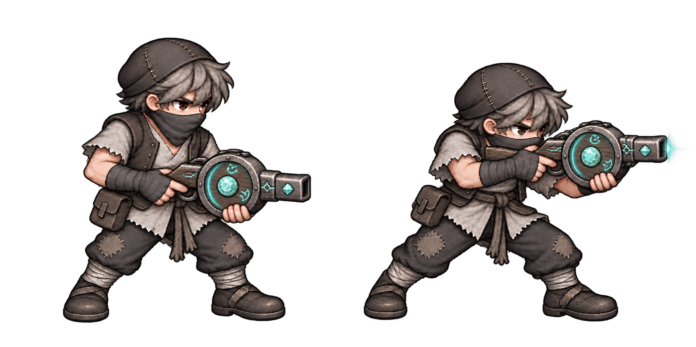

마탄총 반사사수·광선마법사 v2 — 컨펌 대기
미승인 시안입니다. 게임에는 적용하지 않았습니다. 저장된 이미지를 직접 표시하는 별도 보기 페이지입니다.
반사 사수
원형 마력실·청록 결정·각인·마력 링이 있는 마탄총. 정지와 조준 자세.

원본 보기
광선 포대
수수한 회색 로브의 노인 마법사. 나무 지팡이 충전 → 광선 발사. 짧은 광선은 컨셉 표현이며 게임에는 적용하지 않았습니다.

원본 보기 · 생성 프롬프트
아래 두 종은 승인·로컬 구현 완료 / 미검증·미배포
돌진병 v2 — 작은 라운드 실드
평범한 철모·도끼·회색 옷·입가리개. 작은 원형 나무 방패를 더하고 돌진할 때 앞세웁니다. 방패의 방어 기능은 확정하지 않았습니다.

원본 이미지 열기 · 생성 프롬프트
산탄 사수 — 현재 시안
천모자·짧은 나팔총·회색 옷·입가리개. 정지와 조준 자세.

원본 이미지 열기
돌진병 이전 시안 비교